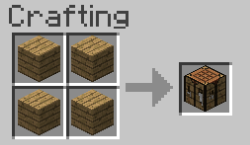

Чтобы сделать верстак нужно сложить четыре доски, как показано на картинке:
Чтобы перейти в справочник по использованию верстака перейдите по ссылке ниже.
Вперед!Тебе нужно сделать точно такой же сайт, постарайся повторить максимально точно.
Не спеши и будь внимателен!
Если готов, то жми кнопку "Готов".
А если хочешь вернуться к выбору заданий - "Назад".